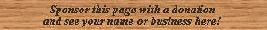

|
Sanftbass German |  |
Listed only by Irwin, who says: �A Flute of 16' manual pitch similar to the Lieblichgedeckt or Echo Gedeckt in tone and volume. It is seen on the Choir or Swell of a few organs.�
See Sanftgedeckt.
Sanftbass 16', Pedal; Hans Sachs Haus, Gelsenkirchen, Germany; Walcker 1927.
Sanftbass 16', Choir; Cathedral of St John the Divine, New York City, New York, USA; Aeolian-Skinner 1954.
Sanftbass 16', Great; Riverside Baptist Church, Jacksonville, Florida, USA; Ontko & Young, 1994.
| Original site compiled by Edward L. Stauff. For educational use only. Sanftbass.html - Last updated 13 November 2001. |
Home Full Index |